Yankun (Alex) Meng
Note: plt.show() must be called if you want to see the plot in a script. In a notebook, it is optional.
# change the way the line was drawn
# plt.plot(x, y, '--') # dashed line
# plt.plot(x, y, 'o--', label='data with noise') # add a legend label
plt.plot(x, y, 'o--', color='blue', lw=1, ms=2) # changing color, line width (lw), marker/dot size (ms)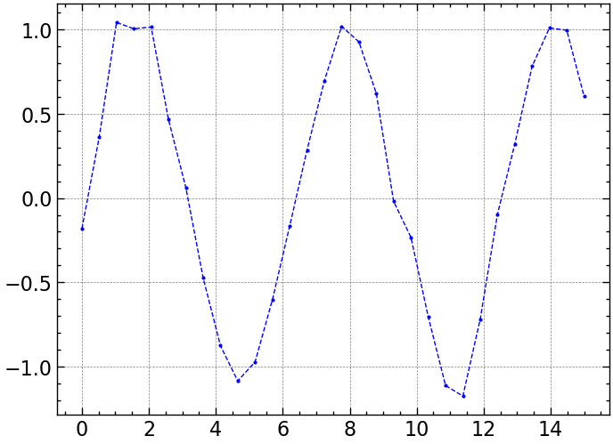
# change figure size
plt.figure(figsize=(8, 3)) # 8 in x and 3 in y (aspect ratio)
plt.plot(x, y, 'o--', color='red', lw=1, ms=2)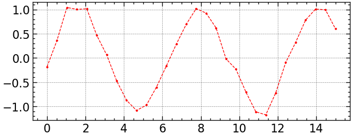
# axis labels
plt.figure(figsize=(8, 3)) # 8 in x and 3 in y (aspect ratio)
plt.plot(x, y, 'o--', color='red', lw=1, ms=2)
plt.xlabel("Time [sec]")
plt.ylabel("Voltage [V]")Text(0, 0.5, 'Voltage (V)')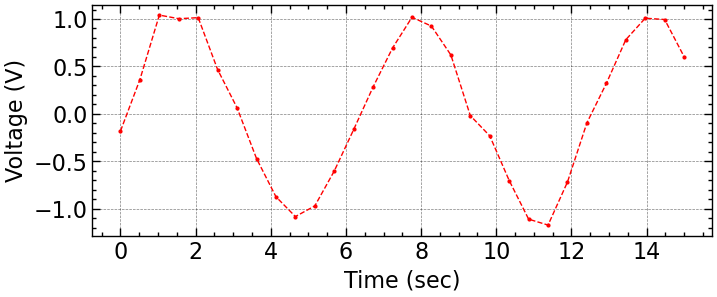
x2 = np.linspace(0, 15, 100)
y2 = np.sin(x2)
# if you have multiple things in the plot, you can add a legend
plt.figure(figsize=(8, 3)) # 8 in x and 3 in y (aspect ratio)
plt.plot(x, y, 'o', color='red', lw=1, ms=2, label="component 1")
plt.plot(x2, y2, '-', color='blue', lw=0.5, label="original")
plt.xlabel("Time [sec]")
plt.ylabel("Voltage [V]")
plt.legend(loc='upper right', fontsize=10) # loc= 'upper right', 'lower left', etc. 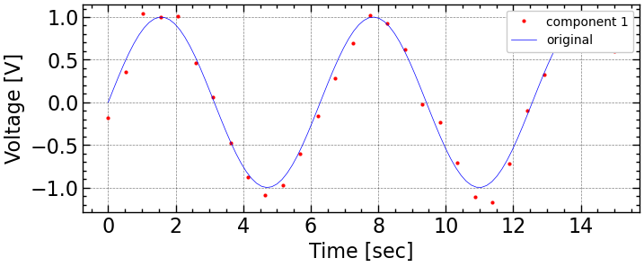
# what if you need more space? limits
# if you have multiple things in the plot, you can add a legend
plt.figure(figsize=(8, 3)) # 8 in x and 3 in y (aspect ratio)
plt.plot(x, y, 'o', color='red', lw=1, ms=2, label="component 1")
plt.plot(x2, y2, '-', color='blue', lw=0.5, label="original")
plt.xlabel("Time [sec]")
plt.ylabel("Voltage [V]")
plt.ylim(top=2) # change y limit, bottom=..., left=..., right=...
plt.legend(loc='upper right', fontsize=10, ncol=2) # make legend two columns so it doesn't take too much space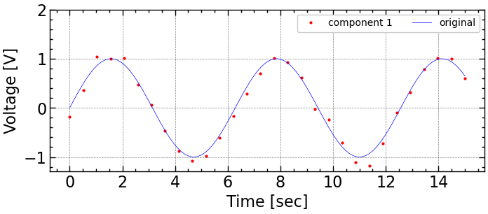
# changing ticks
plt.figure(figsize=(8, 3)) # 8 in x and 3 in y (aspect ratio)
plt.plot(x, y, 'o', color='red', lw=1, ms=2, label="component 1")
plt.plot(x2, y2, '-', color='blue', lw=0.5, label="original")
plt.xlabel("Time [sec]")
plt.ylabel("Voltage [V]")
plt.ylim(top=2) # change y limit, bottom=..., left=..., right=...
plt.legend(loc='upper right', fontsize=10, ncol=2) # make legend two columns so it doesn't take too much space
plt.tick_params(axis='both', labelsize=10) # change tick label size to 10
# axis can be 'x', 'y', or 'both'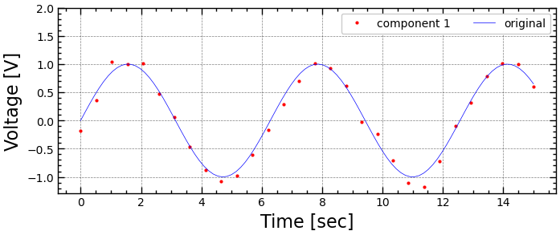
(array([ 3., 10., 55., 158., 272., 249., 159., 76., 15., 3.]),
array([-0.27877989, -0.14374564, -0.0087114 , 0.12632285, 0.2613571 ,
0.39639135, 0.5314256 , 0.66645984, 0.80149409, 0.93652834,
1.07156259]),
<BarContainer object of 10 artists>)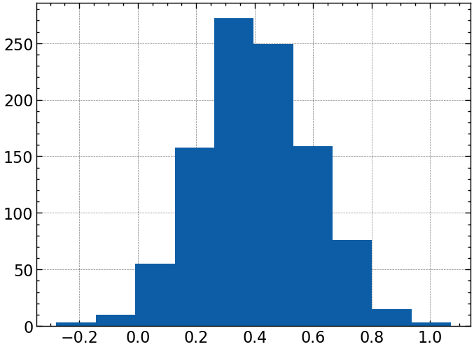
# different styles of bins (useful for multiple histograms)
# the different types are 'bar', 'barstacked', 'step', 'stepfilled'
res2 = np.random.randn(1000)*0.2 + 0.4
plt.figure(figsize=(6,4))
plt.hist(res, bins=30, density=True, histtype='bar', alpha=0.5) # alpha is transparency
plt.hist(res2, bins=30, density=True, histtype='step')
plt.show()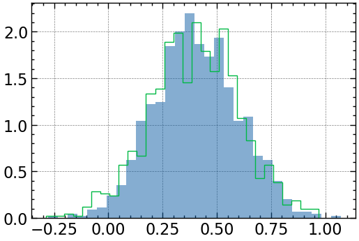
# Create an array of plots
fig, ax = plt.subplots(1, 1, figsize=(12, 4)) # 1 row by 1 column of plots
ax.plot(x, y, 'o--', color='red', lw=1, ms=2)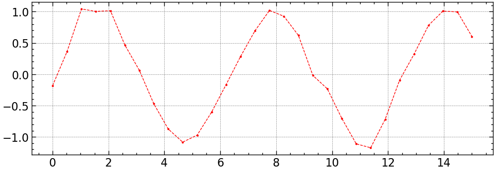
# A small change to labeling
fig, ax = plt.subplots(1, 1, figsize=(12, 4)) # 1 row by 1 column of plots
ax.plot(x, y, 'o--', color='red', lw=1, ms=2)
ax.set_xlabel("Time [sec]")
ax.set_ylabel("Voltage [V]")
plt.show()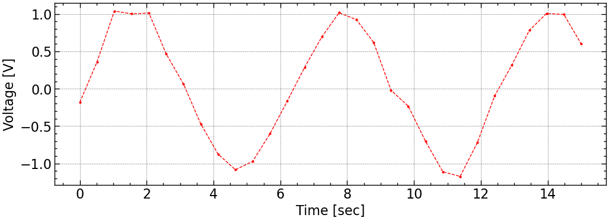
array([[<Axes: >, <Axes: >],
[<Axes: >, <Axes: >],
[<Axes: >, <Axes: >]], dtype=object)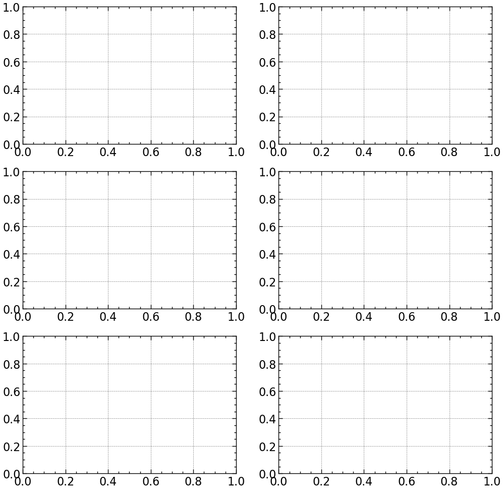
fig, axes = plt.subplots(3, 2, figsize=(12, 12)) # 2 rows by 2 columns of plots
ax = axes[0][0]
# do everything you need to do to the first axis
ax = axes[1][1] # row 1 column 1
ax.hist(res, bins=30, density=True)
ax.set_xlabel("Value")
ax.set_ylabel("Probability")
ax.set_title("Histogram of Random Values")
plt.show()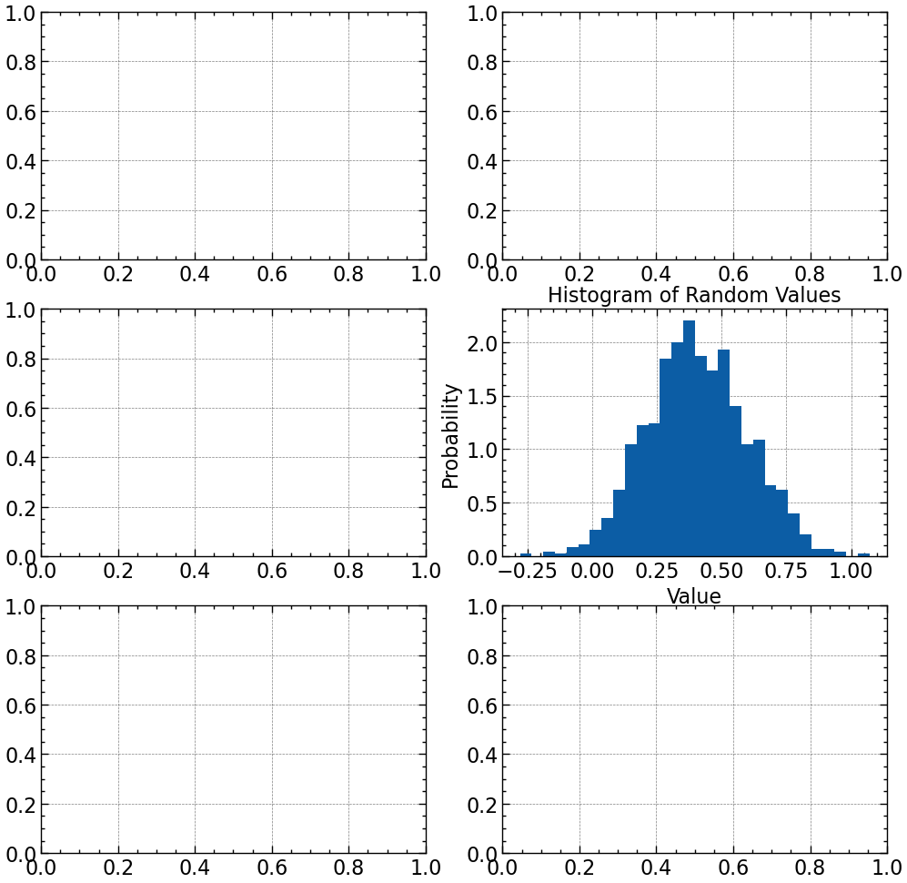
# adding text/labeling inside the plot
fig, ax = plt.subplots(1, 1, figsize=(5, 3)) # 1 row by 1 column of plots
ax.text(0.1, 0.1, "This is some text", fontsize=10, color='red', alpha=0.5) # this takes literal values
ax.plot(x, y, 'o--', color='red', lw=1, ms=2)
ax.set_xlabel("Time [sec]")
ax.set_ylabel("Voltage [V]")
plt.show()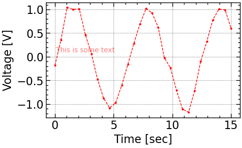
# if you want dimensionless text labeling
fig, ax = plt.subplots(1, 1, figsize=(5, 3)) # 1 row by 1 column of plots
ax.text(0.1, 0.1, "This is some text", transform=ax.transAxes) # this sets (0,0) to bottom left and (1,1) to top right for the text
ax.plot(x, y, 'o--', color='red', lw=1, ms=2)
ax.set_xlabel("Time [sec]")
ax.set_ylabel("Voltage [V]")
plt.show()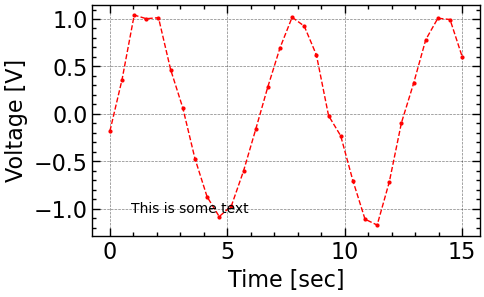